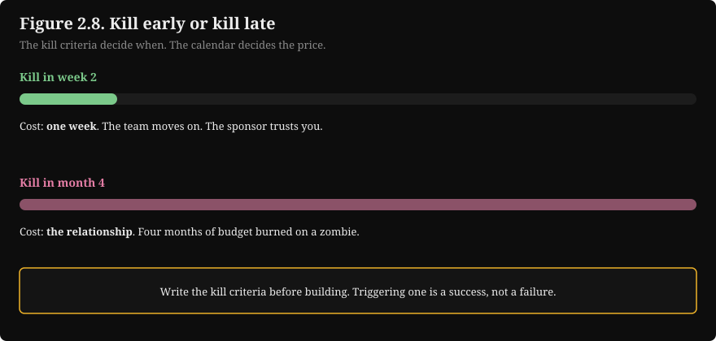
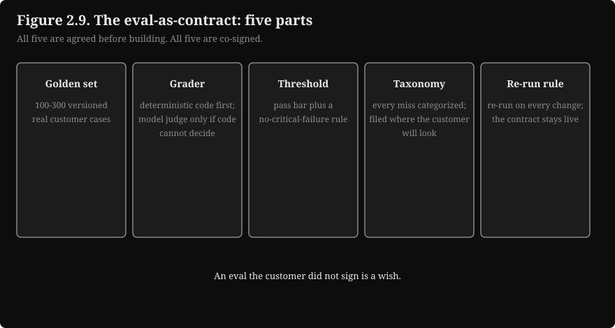
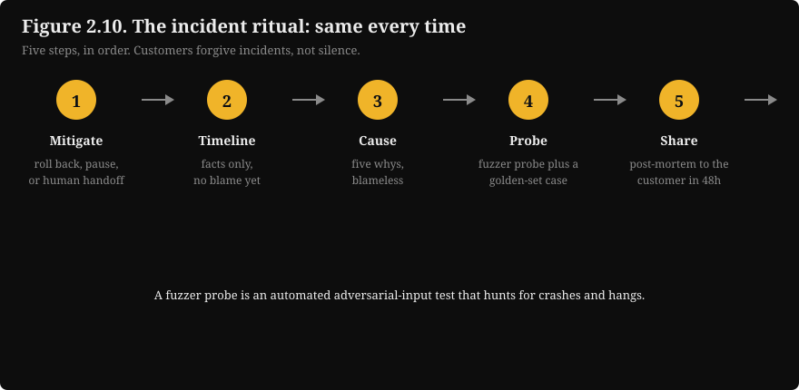
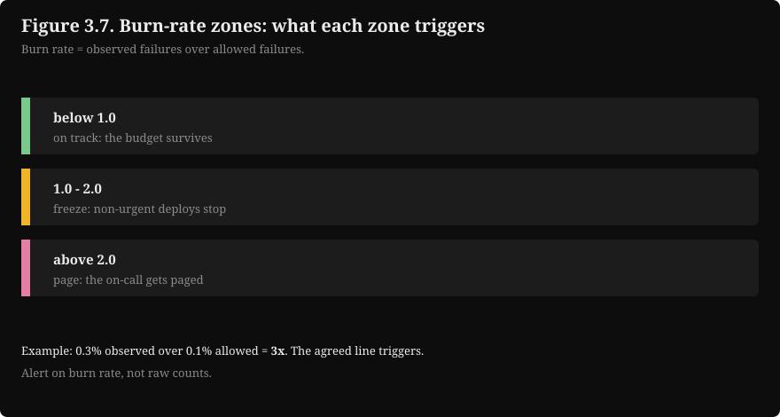
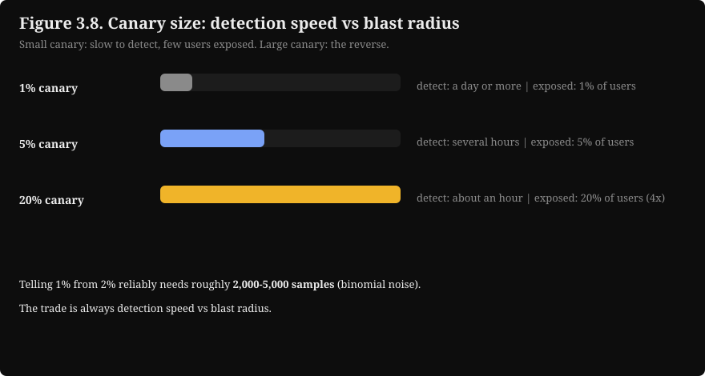
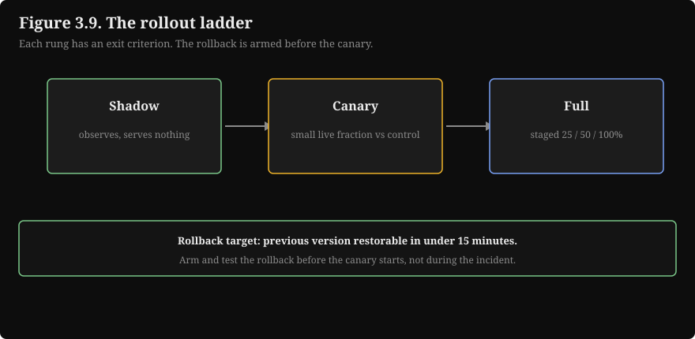
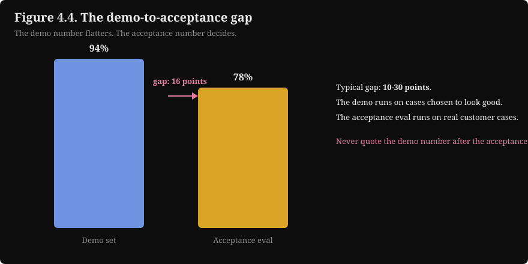
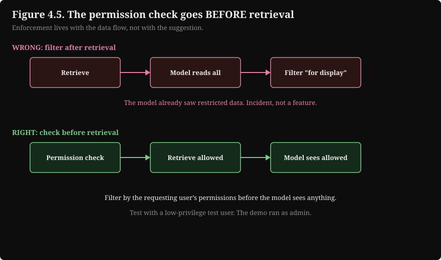
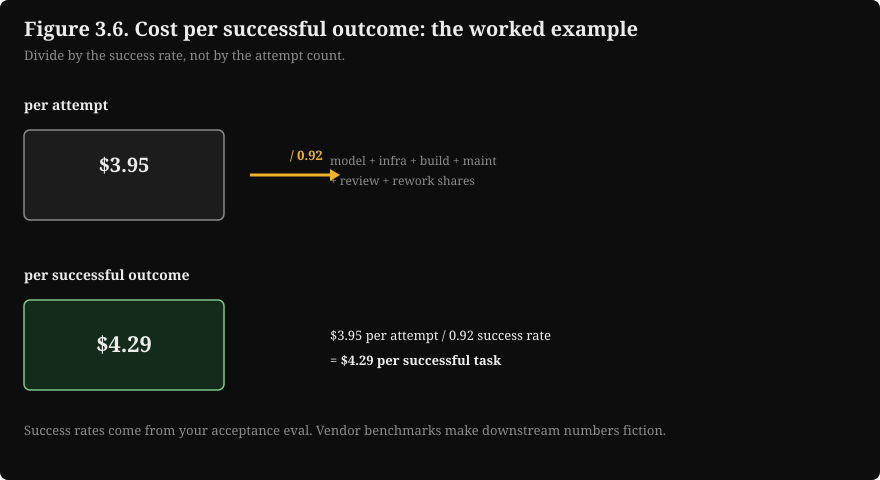
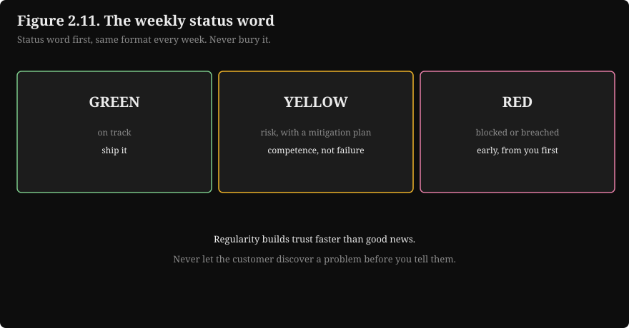

Crash Pack: Forward Deployed Engineer / AI Consultant
This is the condensed field manual for the forward deployed role. It covers the 20 percent of the track that answers 80 percent of the questions from real engagements. It assumes the base vocabulary (evals, RAG, agents, serving). It compresses the seven chapters of Role Track 7 into decision rules, numbers, traps, drills, and one cheat sheet.
How to use it. Read sections 2 and 3 in order: the rules tell you what to decide, the numbers tell you how to compute it. Drill section 5 until every answer is instant. Print section 6 and keep it next to you in customer meetings. The full track (scoping memos, worked Python, labs) is the reference behind every compressed rule here.
Key takeaways
Customers measure a forward deployed engineer by outcomes, not by model quality. Adoption, reliability in production, and time to value form the scorecard.
Every decision on an engagement reduces to five rules. Scope with kill criteria. Let data classification pick the pattern. Price the work by the cost of each successful outcome. Gate releases on the acceptance eval. Pause features when an error budget burns.
The customer decides what "works" means. Your eval must convince a skeptical VP, not a reviewer.
1. The engagement loop
Every engagement follows the same rhythm. Learn it once and you can run any of them.
\n
How to read this diagram
Discover means watching real users do the job, not reading a requirements document. Nobody writes down the best requirements.
Scope turns discovery into a signed plan with numbers. The plan holds success criteria and kill criteria. The kill criteria are the most important line in the plan.
Prototype is intentionally ugly and fast, and it runs on the customer's real data. If it fails here, follow the dotted arrow: kill it cheaply. That is a good outcome.
Harden is where the demo becomes a system. Most of the calendar goes here. This step covers the security review, evals, and edge cases. It also covers monitoring and fallbacks.
Deploy starts with a small pilot, not a launch. Measure checks the success criteria from the scope step. Then expand or hand over with runbooks and training.
The scorecard for the whole loop, in five measures:
Measure
What to track
Why it decides the engagement
Customer outcomes
1-3 outcome metrics from scoping, reported weekly
The only score the sponsor cares about
Adoption
Weekly active users, share of eligible work, retention after month two
A system nobody uses failed, however excellent the tech
Reliability
Uptime, p95 latency, task success rate on real traffic, time to recover
The customer experiences your error rate, not your benchmark
Time to value
Days to first working prototype on real data (target: 14-21)
Engagements fail in long silent builds. Show early proof. It builds trust.
Expansion / handover
More teams buying in, or clean handover with runbooks
The two healthy endings. Everything else is a stall.
2. Decision rules
2.1 Scoping: the go / no-go rule
Discovery has three moves in order: watch (shadow 2-4 users), ask (the 10-question bank), map (workflow boxes marked automate / assist / leave alone). Watching first makes your questions specific. Mapping last forces you to commit to what you learned. Never propose a technical approach before the map exists.
The go / no-go diamond sits at the end of the map:
Gate
Go
No-go (kill it, write why)
Automatable work
At least one box is pattern-matching, marked automate or assist
Every box needs judgment under uncertainty, or the signature is the point
Success criteria
Writable as numbers plus dates, measurable on customer data
Only vibes available ("improve efficiency")
Kill criteria
Specific conditions to stop, signed by the sponsor
Nobody will sign a stop condition
Data
Exists, located, access path approved or approvable
"In the CRM" means three CRMs and a spreadsheet with no owner
Hard constraints
At least one deployment pattern survives the vetoes (2.2)
Residency, security, or procurement vetoes all four patterns
Economics
Cost per successful outcome beats the human baseline at real volume (3.1, 3.3)
Fixed costs dominate at their volume and always will
Sponsor
A named executive owns the outcome and the decision
No sponsor, or the sponsor delegates to a committee
Kill-criteria rules: write kill criteria before building, give each one a number and a date, and get the sponsor to sign them. Example (on real data): "If the acceptance eval stays below 80 percent after 4 weeks, stop." Treat a triggered kill criterion as a success. Killing a bad engagement in week 2 costs a week. Killing it in month 4 costs the relationship. The most trusted engineers kill fast and say why.

Figure 2.8. Kill a bad engagement in week 2 and it costs a week. Kill it in month 4 and it costs the relationship. The kill criteria decide when the arrow moves.
How to read this diagram
Top bar: the engagement dies in week 2. The green segment is short. The cost is one week.
Bottom bar: the same engagement dies in month 4. The red segment spans the whole timeline. The cost is the relationship.
What it is: a visual of the kill-criteria rule. Why it exists: teams delay the kill and pay later. What breaks: without written criteria, nobody pulls the trigger.
A scope without numbers is a wish. "The system improves support efficiency" cannot fail, which means it cannot succeed either. Every commitment you make in a demo becomes a requirement in production. Promise less than the demo shows. Write down exactly what the demo did not cover.
2.2 Deployment pattern: five constraints, four patterns
Read the customer's constraints before drawing any architecture. The big five, and the question each answers:
#
Constraint
The question to ask in week one
What it decides
1
Security review
What data flows where, who can read the logs?
Takes 2-6 weeks; start it in week one, not week eight
2
Data residency
Where is this data allowed to live?
Can kill an entire architecture; decides where the model runs
3
Legacy integration
What systems hold the data, and what interfaces exist?
Budget real time; it is always more than you think
4
Identity and access
What permissions does each user already have?
Permission check goes before retrieval, never after
5
Procurement
Are we inside an existing contract or starting a new one?
A pilot needing a purchase order in week two will stall
Four patterns cover nearly every engagement. Data classification picks the pattern:
\n
How to read this diagram
The first question is always data classification. Everything else follows from it.
"Restricted" means regulated or contractually confined: health records, financial data, defense work, data under a strict data-processing agreement.
No internet path means on-premises. Accept it early; fighting it wastes months.
Volume decides between VPC and hybrid: steady high volume justifies dedicated GPUs in the VPC; spiky or mixed workloads fit a hybrid split.
Unrestricted data goes to the vendor API. Do not build infrastructure for a problem the API already solves.
The selection rule is veto, then score. Hard constraints are vetoes, not weights: "data cannot leave the network" eliminates the vendor API entirely, no matter how fast it is. Score only what survives, with weights you set live with the customer and can defend out loud. A scored table the customer can argue with beats a recommendation they cannot inspect.
For the security review meeting, bring three artifacts: a data-flow diagram (every arrow labeled with what flows, encrypted in transit and at rest), a data inventory (what you store, where, for how long, including prompts and eval traces), and the permission model ("we check the same access list the source system uses, before retrieval" ends meetings early, in a good way).
2.3 Build vs buy
Model "buy" as one more option in the cost comparison. Count zero build cost. Use the vendor's per-task price as the model cost. Discount the vendor's claimed success rate with your skepticism, then validate it in the pilot shadow. The honest answer is usually hybrid: buy the commodity model, build the evals, the integration, and the permission layer yourself. That is where a deployed engineer adds the most value.
Build when
Buy when
The workflow is the differentiator (their process, their data, their permissions)
The capability is a commodity (a model API, a vector database)
Evals must match the customer's definition of done (they always must)
The vendor's success rate survives your pilot-shadow measurement
Data cannot leave their network and no compliant vendor option exists
Volume is low and fixed build cost would dominate (check 3.3)
The integration surface is the product (legacy systems, SSO, audit)
Time to value matters more than differentiation for this step
2.4 Evals as contracts: acceptance thresholds
The eval is a contract. Both sides sign it in advance. It states what gets measured, on what data, and with what pass threshold. It states what happens on pass or fail. Five parts, all agreed before building:
Part
Threshold / rule
Why it is load-bearing
Golden set
100-300 real customer cases, labeled by customer experts
Below 100 the confidence intervals are too wide to argue about; above 300 the experts never finish
Grader
Deterministic first (exact match, rubric code); model judge only if impossible, calibrated against humans first
A grader the customer cannot read is a grader they will not trust
Pass threshold
A number plus the no-critical-failure rule
One catastrophic miss fails the eval at any average; customers remember the catastrophe
Failure taxonomy
Every miss categorized: wrong answer, refused, wrong question, too slow, leaked data
"9 formatting edge cases, 3 reasoning gaps" is a fix list; "87 percent" is a shrug
Re-run rule
On every model or prompt change, on a schedule, before every pilot release
The eval is a gate in the pipeline, not a one-time ceremony

Figure 2.9. The eval is a contract with five parts: the golden set, the grader, the threshold plus the no-critical-failure rule, the taxonomy, and the re-run rule. All agreed before building. All co-signed.
How to read this diagram
Box 1, golden set: 100-300 versioned real customer cases. The contract behind every eval.
Box 2, grader: deterministic code first. A calibrated model judge only if code cannot decide.
Box 3, threshold: the pass bar plus the no-critical-failure rule, checked as a separate boolean.
Box 4, taxonomy: every miss categorized, filed where the customer will look.
Box 5, re-run rule: re-run on every change. The contract stays live.
What it is: the anatomy of an eval both sides sign. Why it exists: unsigned evals are wishes. What breaks: a missing re-run rule lets the eval rot.
Run user acceptance in three rounds: blind grading (3-5 experts grade a shuffled mix of system and human outputs, killing bias both ways), adversarial session (invite the skeptics to break it for 30 minutes; every break becomes a golden case or a documented limit), pilot shadow (two weeks drafting alongside the current process, human decides; the agreement rate is the number the sponsor will quote).
\n
2.5 Escalation triggers
Escalation is a rule, not a feeling. Set the lines in the scoping memo, then let the dashboard fire them.
Trigger
Line
Action
Error budget burn rate above 2x
Sustained, any of the three budgets
Pause feature work; fix reliability; tell the sponsor the same day
Quality below SLO on sampled traffic
Page, not ticket
Wake someone; the runbook must already exist
Kill criterion approaching
The week you see it, not the week it hits
Tell the sponsor with a new date and what changed, or start the kill
Acceptance eval fails the bar
Any release gate
Lead with the number, then the taxonomy, then the plan and the cost
Security review blocked
Week one, not week eight
Escalate for a parallel path (on-prem option, narrower data scope)
Scope creep ("can it also do invoices?")
Immediately
Point at the scoping memo; new workflow means a new memo and new criteria
The incident ritual stays the same every time:
Mitigate first: roll back, pause, or route to human handoff.
Write the timeline with facts only.
Find the cause with five whys, blameless.
Add a fuzzer probe and usually a golden-set case at the exact break. A fuzzer probe is an automated adversarial-input test that hunts for crashes and hangs.
Share the post-mortem with the customer within 48 hours.
Customers forgive incidents; they do not forgive silence.

Figure 2.10. The incident ritual, same every time: mitigate, timeline, cause, probe, share. Customers forgive incidents. They do not forgive silence.
How to read this diagram
Step 1, mitigate: roll back, pause, or route to human handoff. Stop the bleeding first.
Step 2, timeline: write what happened with facts only. No blame yet.
Step 3, cause: run five whys, blameless. Find the mechanism, not the person.
Step 4, probe: add a fuzzer probe and usually a golden-set case at the exact break.
Step 5, share: send the post-mortem to the customer within 48 hours.
What it is: the ordered response to any incident. Why it exists: panic skips steps. What breaks: skipping the probe lets the same incident return.
The fallback cascade is the ordered list of what happens when an AI call fails. Design it before the pilot.
\n
How to read this diagram
Order the cascade by cost and reliability: each step costs less and works more reliably than the last, usually at lower quality. Agree the trade-off in advance.
Retry once, never in a loop. Retry storms are how one slow model takes down the whole system.
The smaller model step exists because a fast, dumber answer beats no answer for most tasks. Know which tasks tolerate it (drafting) and which do not (sending to a customer).
The human handoff is the bottom of the cascade, not a failure. It carries full context: what the team tried, what failed, the partial work so far.
Critical tasks skip sideways into mandatory human review. Decide the critical list in scoping, not at 2am.
3. Must-memorize numbers and formulas
3.1 Cost per successful outcome
The unit that matters is cost per successful outcome: the total cost of one task completed correctly, in dollars per successful task. Not cost per token. Not cost per API call. Five parts feed it:
cost per successful outcome
┌──────────────────────────────────┐
│ model: tokens in + out │ $0.12
│ infra share: monthly / tasks │ $0.20
│ build share: amortized │ $0.25
│ maintenance share │ $0.15
│ review labor: 92% x 1.5 min │ $1.73
│ rework labor: 8% x 15 min │ $1.50
├──────────────────────────────────┤
│ per attempt: $3.95 │
│ / success rate 0.92 │
│ = $4.29 per successful task │
└──────────────────────────────────┘
The formula, per task attempt:
per_attempt = model + infra_share + build_share + maint_share
+ success_rate x review_cost + (1 - success_rate) x rework_cost
cost_per_outcome = per_attempt / success_rate
Dividing by the success rate is the step people skip. It converts "cost per attempt" into "cost per outcome," which is what the customer's budget experiences. Success rates must come from your acceptance eval on customer data; vendor benchmarks make every downstream number fiction. Human review minutes are the most uncertain input: measure them in the pilot shadow, do not estimate them in a meeting (people are optimistic about review speed by 2-3x).
# cost_per_outcome.py -- the number the budget feels (executed, output below)
#
# WHAT: Cost per successful outcome for one design option.
# WHY: Token-price comparisons mislead. A cheap model at 70% success with
# heavy human review usually loses to a pricier model at 92% that
# just works. Every assumption is a named parameter the customer can
# challenge in the meeting.
from dataclasses import dataclass
@dataclass
class Option:
name: str
model_cost: float # $ model cost per task attempt (measured tokens x price)
success_rate: float # from the ACCEPTANCE EVAL, not vendor benchmarks
review_min: float # human minutes to review one successful task
rework_min: float # human minutes to rework one failed task
labor_hr: float = 75.0 # fully-loaded reviewer $/hour (illustrative)
def cost_per_outcome(o, infra_share, build_share, maint_share):
# Labor splits on the outcome: successes need review, failures need rework.
labor = (o.success_rate * o.review_min / 60 * o.labor_hr
+ (1 - o.success_rate) * o.rework_min / 60 * o.labor_hr)
per_attempt = o.model_cost + infra_share + build_share + maint_share + labor
# A zero success rate means infinite cost per outcome. The assert keeps
# the math honest instead of smoothing a dead option into the ranking.
assert o.success_rate > 0, "zero success rate = infinite cost per outcome"
return per_attempt / o.success_rate # attempts -> outcomes: the key division
# Program: 20k tasks/mo, $4k infra, $120k build over 24 months, $3k/mo upkeep
tasks, infra_m, build, life_m, maint_m = 20_000, 4_000.0, 120_000.0, 24, 3_000.0
shares = (infra_m / tasks, build / life_m / tasks, maint_m / tasks)
cheap = Option("small model + heavy review", 0.02, 0.70, 4.0, 15.0)
pricey = Option("large model + light review", 0.12, 0.92, 1.5, 15.0)
for o in (cheap, pricey):
print(f"{o.name}: ${cost_per_outcome(o, *shares):.2f}/successful task")
Output (verified by execution):
small model + heavy review: $13.92/successful task
large model + light review: $4.29/successful task
The 6x token-price gap reverses: the pricey model wins because its higher success rate slashes rework labor. That is the token-price fallacy in one table.
3.2 Error budgets and burn rates
AI SLOs need three dimensions, because the system has three failure states (down, slow, wrong-looking answer):
Dimension
Example SLO (30 days)
Budget (1 - SLO)
What burns it
Availability
99.9% of requests answered
0.1% ~ 43.2 min
Outages, deploy failures, quota exhaustion
Latency
95% of tasks under 30 s
5% slow tasks
Long inputs, model slowness, retry storms
Quality
90% of sampled production tasks pass the grader
10% bad answers
Prompt drift, data drift, model version change
Budget math: 99.9% availability over 30 days allows 0.001 x 30 x 24 x 60 = 43.2 minutes of downtime. Memorize that number.
Burn rate = (observed failure fraction) / (allowed failure fraction). Units: a dimensionless multiple. 1.0 means exactly on pace to exhaust the budget at the end of the window. Above 1.0 means breaching early. Alert on burn rate, not raw counts. A quality budget that burns at 2x with three weeks left in the month will breach before the month ends. The agreed line: burn above 2x pauses feature work until it drops under 1x. That rule lives in the scoping memo. The script just reads the dashboard.

Figure 3.7. Burn below 1.0: the budget survives. Burn between 1.0 and 2.0: freeze non-urgent deploys. Burn above 2.0: page the on-call. Alert on burn rate, not raw counts.
How to read this diagram
Zone 1, below 1.0: the budget survives. Keep shipping.
Zone 2, 1.0 to 2.0: freeze non-urgent deploys. The budget dies early at this pace.
Zone 3, above 2.0: page the on-call. The budget breaches far too fast.
What it is: the policy ladder for error budgets. Why it exists: raw counts do not show pace. What breaks: alerting on breach instead of burn rate arrives too late.
# burn_rate.py -- error-budget burn rates (executed, output below)
#
# WHAT: Burn rate for one budget from observed failures.
# WHY: "The system feels flaky" loses arguments. "Quality is burning at
# 2.5x; per our agreement, features pause until it is under 1x" wins.
def burn_rate(observed_fail, total, slo):
# observed_fail/total: measured failure fraction in the window.
# 1 - slo: the allowed fraction. Their ratio is the burn multiple.
allowed = 1.0 - slo
if allowed == 0: # a 100% SLO: any failure is a breach, report infinity
return float("inf") if observed_fail else 0.0
return (observed_fail / total) / allowed
# Availability: SLO 99.9%, 5 unanswered of 1000 requests in the window
print("availability burn:", round(burn_rate(5, 1000, 0.999), 2), "x")
# Quality: SLO 90% pass, random sample of 100 production tasks, 25 failed
qb = burn_rate(25, 100, 0.90)
print("quality burn: ", round(qb, 2), "x",
"-> PAUSE FEATURES" if qb > 2.0 else "")
Output (verified by execution):
availability burn: 5.0 x
quality burn: 2.5 x -> PAUSE FEATURES
Note the quality sample: you cannot grade every production task, so you grade a random sample and always report n. Grading only the easy traffic makes the quality SLO a lie the dashboard tells.
3.3 Breakeven vs the human baseline
"Is it worth it for our small team?" Solve for the monthly volume where the AI option becomes cheaper than the human:
n = fixed_monthly / (human_per_success - var_per_success)
where fixed_monthly = infra + maintenance + build/lifetime_months,
and var = model + success_rate x review_cost + (1 - success_rate) x rework_cost, all divided by success_rate.
Units: tasks per month. Below n, fixed costs dominate and the human wins. If the denominator is zero or negative, the AI never wins on cost: say so early.
# breakeven.py -- the honest answer to "is it worth it?" (executed, output below)
#
# WHAT: Monthly task volume where the AI option beats the human baseline.
# WHY: Fixed costs (infra, build, upkeep) dominate at low volume. This is
# the number that stops a bad engagement before it starts.
def breakeven(model_cost, success_rate, review_min, rework_min, labor_hr,
fixed_monthly, human_per_task):
# Variable cost per attempt, converted to per SUCCESSFUL task.
var = (model_cost + success_rate * review_min / 60 * labor_hr
+ (1 - success_rate) * rework_min / 60 * labor_hr)
denom = human_per_task - var / success_rate
# denom <= 0: variable cost alone exceeds the human. No volume fixes that.
return None if denom <= 0 else fixed_monthly / denom
fixed = 4_000.0 + 3_000.0 + 120_000.0 / 24 # infra + upkeep + build/24mo
n = breakeven(0.12, 0.92, 1.5, 15.0, 75.0, fixed, 12.50)
print("large model option:", f"{int(n):,} tasks/month" if n else "never cheaper")
n2 = breakeven(0.02, 0.70, 4.0, 15.0, 75.0, fixed, 12.50)
print("small model option:", f"{int(n2):,} tasks/month" if n2 else "never cheaper")
Output (verified by execution):
large model option: 1,353 tasks/month
small model option: never cheaper
The cheap model never beats the human: its variable cost per successful task already exceeds the human's $12.50. No volume rescues it.
3.4 Latency budgets and the serving cost model
SLO latency on p95 and p99, never the mean. AI latency has a long tail: p50 looks fine while p95 is terrible because long inputs generate long outputs. The mean hides the exact requests the customer's executives tried in the demo. Always clarify whether the SLO names time-to-first-token or full generation. At 256 output tokens, decode physics sets a floor near 5.4 seconds for full generation. If the customer wants sub-second, answer with streaming tokens, shorter outputs, or a smaller model, not hope.
The one-minute serving cost model (memorize it):
cost per 1k requests = (GPUs x $/GPU-hr) / (req/s x 3.6)
Example: 9 GPUs x $2.50/hr / (40 req/s x 3.6) = $22.50 / 144 ≈ $0.16 per 1k requests
Cost levers in ROI order:
Batching: the biggest lever until the latency knee.
Output length: linear in cost.
Quantization: roughly 2x per step down the ladder, with quality risk.
Right-size context: retrieved passages and agent histories are KV-cache memory.
Caching: exact-match and semantic.
Model routing: small model for easy queries.
Latency and throughput are the same problem viewed from different ends. Every throughput lever is a latency lever. Batch size is the dial that trades them.
3.5 Drift and rollout numbers
PSI (population stability index) compares a feature's serving distribution against its training distribution across bins: PSI = sum over bins of (actual% - expected%) x ln(actual% / expected%). Rule of thumb: below 0.10 no significant change, 0.10-0.25 small change worth watching, above 0.25 significant shift, investigate.
# psi.py -- drift check with the worked numbers (executed, output below)
#
# WHAT: Population Stability Index between training and serving bins.
# WHY: Data drift is the quiet killer of quality SLOs. PSI turns "the data
# feels different" into a number with an investigate line at 0.25.
import math
def psi(expected, actual):
# expected/actual: bin fractions summing to 1.0 each. Bins are fixed
# from training; changing bins between runs makes PSI meaningless.
return sum((a - e) * math.log(a / e) for a, e in zip(actual, expected))
print("PSI mild shift: ", round(psi([0.50, 0.30, 0.20], [0.40, 0.35, 0.25]), 3))
print("PSI severe shift:", round(psi([0.50, 0.30, 0.20], [0.20, 0.30, 0.50]), 3))
Output (verified by execution):
PSI mild shift: 0.041
PSI severe shift: 0.55
0.041 is no significant change. 0.55 is well past the 0.25 investigate line.
Canary math. Baseline error rate 1%; you want the canary to catch a regression to 2% before full rollout. Telling 1% from 2% reliably needs roughly 2,000-5,000 samples (binomial noise). At a 5% canary on 10,000 requests/hour, the canary sees 500 requests/hour, so detection takes several hours, not minutes. Shrink the canary to 1% and detection takes a day or more. Grow it to 20% and you detect in about an hour, but you expose 4x the users. The trade is always detection speed vs blast radius. Rollout ladder: shadow (observes, serves nothing), then canary (small live fraction vs control), then full (staged 25/50/100%). Arm a tested one-command rollback before the canary starts. Rollback target: previous version restorable in under 15 minutes.

Figure 3.8. Small canary: slow detection, few users exposed. Large canary: fast detection, many users exposed. The trade is always detection speed vs blast radius.

Figure 3.9. Rollout ladder: shadow (observes, serves nothing), then canary (small live fraction vs control), then full (staged 25/50/100%). Arm a tested one-command rollback before the canary starts.
How to read this diagram
Rung 1, shadow: the new version observes live traffic and serves nothing. Zero blast radius.
Rung 2, canary: a small live fraction runs against the control. Detection starts here.
Rung 3, full: staged 25, then 50, then 100 percent of traffic.
The rollback: armed and tested before the canary starts. Target: the previous version restorable in under 15 minutes.
What it is: the ordered path to production. Why it exists: each rung bounds the blast radius. What breaks: an untested rollback will not work when needed.
3.6 Calendar and threshold numbers
These are the constants of the role. Memorize them as a set:
Number
Meaning
2-6 weeks
Security review duration; start it in week one
14-21 days
Target: working prototype on real customer data (time to value)
100-300
Golden-set cases to start (confidence vs labeling effort)
3-5
Customer experts for blind grading
2 weeks
Pilot shadow before any go-live decision
10-30 points
Typical demo-to-acceptance accuracy gap; never quote the demo number after the eval exists
1
Retries per model call, never a loop (retry storms take down systems)
48 hours
Post-mortem shared with the customer after an incident
15 minutes
Rollback target for the previous version
90% / 95% / 99.9%
Example quality / latency / availability SLOs (negotiate per engagement, then write them in the memo)
## 4. Classic traps
Trap 1: The demo-vs-production gap
Mechanism. The demo runs on clean sample data, one friendly user, admin permissions, one request at a time, errors on your screen. Production is dirty data, tired users at 6pm, partial permissions, spiky traffic, errors paging someone at 2am. The accuracy gap between demo cases and acceptance cases is typically 10-30 points.
How to dodge. Promise less than the demo shows. Write down exactly what the demo did not cover. Never quote the demo number after the acceptance eval exists. Run the 12-item hardening checklist as a gate on every release. Check: dirty-data pass, input limits, permission checks, secrets, audit logging, rate limits. Then: fallbacks, monitoring, rollback plan, green acceptance eval, runbook, handover training.
Trap 2: Scoping without kill criteria
Mechanism. The engagement starts with a vague ask and nobody writes down when to stop. Without kill criteria, every struggling engagement becomes a zombie: too much sunk cost to kill, too little progress to ship. The customer loses trust slowly, then all at once.
How to dodge. Write kill criteria before building. Give each one a number and a date. Get the sponsor to sign them. Example (on real data): "If the acceptance eval stays below 80 percent after 4 weeks, stop and reassess." Treat a triggered kill criterion as a success. The most trusted engineers kill fast and say why.
Trap 3: Evals that do not match the customer's definition of done
Mechanism. You report 94 percent on your eval set. The VP asks "94 percent of what?" and says "those are not our real cases." The eval measured the wrong thing. It used sample data instead of real cases. Its grader was unreadable to the customer.
It had no critical-failure rule. Its averages hid the catastrophe. Nothing ships because the measurement is not trusted.
How to dodge. Build the golden set from real customer cases with the customer's own experts (100-300 to start). Use deterministic graders first. Agree the pass threshold plus the no-critical-failure rule in advance. Categorize every miss. Re-run on every change. The eval is a contract, and the customer co-signs it.

Figure 4.4. The demo scored 94 percent on cases chosen to look good. The acceptance eval scored 78 percent on real customer cases. The gap runs 10-30 points. Quote the acceptance number.
Trap 4: Silent cost blowups
Mechanism. The pilot is cheap: low volume, one model, nobody watching the bill. Then volume grows 10x, someone enables the large model for all traffic, retries multiply on every timeout, and the invoice arrives. Token cost was the only line anyone modeled; human review, rework, infra, and build amortization were invisible.
How to dodge. Price cost per successful outcome before the pilot, with all five parts. Set per-user and per-team quotas so the quarter-end flood degrades gracefully. Alert on cost per task, not just total spend. Recompute the breakeven volume whenever the model or the volume changes. Retry once, never in a loop.
Trap 5: The permission check in the wrong place
Mechanism. The retrieval step runs first. The model reads everything. The permission filter applies afterward, "for display" only. An agent that surfaces a document the user may not see has caused a security incident, not shipped a feature. The demo ran as admin, so nobody noticed until the pilot's first hour.
How to dodge. Design the permission check before the retrieval step, never after: filter by the requesting user's permissions before the model sees anything. Test with a low-privilege test user. Put "we check the same access list the source system uses, before retrieval" in the data-flow diagram you bring to the week-one security review.

Figure 4.5. Wrong: retrieve, let the model read everything, then filter for display. The model already saw restricted data. Right: check permissions first, retrieve only allowed documents, and let the model see only those.
How to read this diagram
Wrong flow, top: retrieval runs first. The model reads everything, including restricted documents. The filter applies afterward, for display only. The damage is done.
Right flow, bottom: the permission check runs first. Retrieval returns only allowed documents. The model never sees the rest.
What it is: the ordering rule for access control in RAG and agents. Why it exists: display filtering leaves data in model context, logs, and caches. What breaks: a prompt-level filter leaks through summaries, embeddings, or logs.
>5. Rapid-fire Q&A
Twenty-eight checks. Read the question, commit to an answer, then reveal. Every answer shows the working.
Scoping
Q1. An engagement starts with "we want AI for our support team." What are the first three moves, in order, and why that order?
A. Prototype, scope, discover: build fast to learn what the customer wants.
B. Watch, ask, map: shadow users, run the question bank, draw the workflow.
C. Ask, map, watch: questions first, then verify by shadowing.
Answer: B. Watching first makes your questions specific (you ask about the ticket queue you saw, not "tell me about support"). Mapping last forces you to commit to what you learned: each box marked automate, assist, or leave alone. Proposing a technical approach before the map exists is the most expensive mistake on customer work. A week of good discovery saves three months of building the wrong thing.
A, wrong: a prototype before discovery optimizes for the wrong task; you learn fast about a solution nobody asked for.
C, wrong: questions without observation stay generic; nobody asked the customer precisely, so your questions need the grounding that shadowing gives.
Q2. Which discovery question is the highest-value one on the bank, and why?
A. "What does a perfect result look like?" because you need it for the golden set.
B. "What did the last attempt at this fail on?" because it reveals the landmines.
C. "If this works perfectly, what changes for the business?" because you need the ROI number.
Answer: B. Customers rarely volunteer failure history. Ask what the last attempt failed on, and ask what the vendor did wrong, not just what the technology did wrong. The answer is usually about trust, not accuracy, and it names the exact failure mode your kill criteria and evals must cover. (C matters for the economics chapter, and A feeds the golden set, but neither prevents you from stepping on the mine the last vendor found.)
A, wrong: valuable, but the golden example does not tell you what killed the last pilot.
C, wrong: the ROI number enables the cost model, but a wrong ROI assumption is survivable; repeating the last failure is not.
Q3. Which of these is a well-formed success criterion?
A. "The system improves support efficiency by the end of the quarter."
B. "By week 8, the system drafts responses for 60 percent of tier-1 tickets. Agents accept the draft unchanged at least 70 percent of the time, measured on live traffic."
C. "The system reaches 95 percent accuracy on the demo set."
Answer: B. It has a number, a date, a data source, and it is measurable on the customer's real work. A cannot fail, which means it cannot succeed either. C measures the wrong distribution: the team chose demo cases to look good, and the demo-to-acceptance gap runs 10-30 points.
A, wrong: no number, no date, no measurement method. A wish, not a criterion.
C, wrong: the demo set is not the customer's definition of done; quote the acceptance number once the eval exists.
Q4. Which of these is a valid kill criterion?
A. "We will reassess if the project is not going well."
B. "If after 4 weeks on real data the acceptance eval stays below 80 percent, we stop and reassess."
C. "The sponsor may cancel at any time with two weeks notice."
Answer: B. It names a metric, a threshold, a timebox, and a data source, so it can actually trigger. Kill criteria protect both sides. Write them before building and get the sponsor to sign them. A never triggers because "not going well" is arguable forever. C is a contract clause, not a decision rule: it says who may stop, not when the evidence says stop.
A, wrong: unfalsifiable; zombie engagements live on sentences like this.
C, wrong: describes authority, not evidence.
Enterprise architecture
Q5. Why is data classification the first question in pattern selection?
A. Because the security team requires the paperwork first.
B. Because residency and restriction answers can veto entire architectures before any other design work matters.
C. Because it determines the model choice.
Answer: B. "This data cannot leave the country" kills the vendor-API pattern outright; "no internet path" forces on-premises. Everything downstream (where the model runs, what the latency looks like, what it costs) follows from classification. Asking it in week eight means redesigning. It does not pick the model (C); the same model can run in four patterns.
A, wrong: paperwork follows the decision; the decision is architectural, not bureaucratic.
C, wrong: classification constrains placement, not model selection.
Q6. A bank: customer data cannot leave its network, there is an internet path, and volume is steady and high. Which pattern, and why?
A. Vendor API: fastest to value, and speed matters most.
B. Private cloud VPC: data stays in-region, dedicated GPUs beat per-token pricing at steady high volume.
C. On-premises: maximum control over the hardware.
Answer: B. The hard constraint (data stays in network) vetoes the vendor API before scoring; that is what vetoes are for. Between VPC and on-premises, steady high volume justifies dedicated GPU capacity in the customer's cloud account. Setup takes weeks, not the months of on-prem procurement. C is viable but slower to value with no compensating need (there is an internet path to their cloud).
A, wrong: vetoed by the hard constraint. No weight rescues a vetoed pattern.
C, wrong: acceptable only if the internet path did not exist or regulation demanded air-gapping.
Q7. The vendor API scores highest on your weighted table, but the customer's hard constraint is "data cannot leave the network." What do you recommend?
A. The vendor API, because the math says it wins.
B. Re-weight speed higher and re-run until the API wins honestly.
C. Drop the vendor API: hard constraints are vetoes, and you score only the survivors.
Answer: C. A hard constraint eliminates options entirely; scoring ranks what survives. This mirrors how security reviews actually work: "data cannot leave the network" is not a preference to trade off. Weights are opinions you change live with the customer; vetoes are facts you do not negotiate with arithmetic.
A, wrong: the score never got to vote; the pattern was already eliminated.
B, wrong: tuning weights to rescue a vetoed pattern decorates a decision the security team will reverse in week six.
Q8. Where does the permission check go relative to retrieval, and why?
A. After retrieval, filtering what gets displayed: simpler to do.
B. Before retrieval: the model must never see what the user may not see.
C. It does not matter as long as the UI hides restricted documents.
Answer: B. An agent that surfaces a document the user is not allowed to see has caused a security incident, not shipped a feature. Filtering after retrieval means the model already read restricted content (it can leak through summaries, embeddings, or logs). Test with a low-privilege test user; the demo ran as admin, which is why this breaks in the pilot's first hour.
A, wrong: display filtering leaves the data in model context, logs, and caches.
C, wrong: UI hiding is not access control.
Evals as contracts
Q9. Why start the golden set at 100-300 cases?
A. It is a round number customers find reassuring.
B. Below 100 the confidence intervals are too wide to argue about; above 300 the customer's experts will not finish labeling.
C. Model judges need at least 100 examples to calibrate.
Answer: B. The lower bound is statistics (Supplement 11A: small samples cannot support the claims you want to make). The upper bound is human: the customer's experts own the labels, and their time is the scarcest resource on the engagement. Real customer cases, not synthetic, at first.
A, wrong: reassurance is not a sizing method.
C, wrong: calibration is a grader concern, and deterministic graders come first anyway.
Q10. The system scores 95 percent on the golden set but fails one critical case: it leaked a salary number into a summary. Pass or fail?
A. Pass: 95 percent clears the 90 percent threshold.
B. Fail: the no-critical-failure rule fails the whole eval regardless of the average.
C. Pass with a warning: note it in the taxonomy and move on.
Answer: B. Check the no-critical-failure rule as a separate boolean, never folded into the average, because customers care more about the worst case than the average. A 95 percent system that leaks one salary number is a failed system; customers remember the catastrophe, not the mean. The taxonomy (C) is for categorizing misses, not for waiving the rule.
A, wrong: the threshold was "90 percent AND no critical failures." Half the contract.
C, wrong: a warning does not un-leak the salary number.
Q11. The demo scored 94 percent; the acceptance eval scores 78 percent. Which number do you report to the sponsor?
A. 94 percent: it shows the system's potential.
B. 78 percent: the acceptance number is the only number once the eval exists.
C. The average, 86 percent: it balances optimism and realism.
Answer: B. The demo ran on cases chosen to look good. The acceptance eval runs on cases the customer's experts chose to be representative, including the ugly ones. The gap is typically 10-30 points and it is where engagements are won or lost. Quoting the demo number after the acceptance eval exists destroys trust the first time reality disagrees.
A, wrong: potential is not a measurement; the sponsor will anchor on it and feel betrayed.
C, wrong: averaging two different distributions produces a number that measures nothing.
Q12. What is the purpose of the adversarial UAT session, and where does it sit in the order?
A. First: let skeptics try it early so they feel heard.
B. Second, after blind grading: give skeptics 30 minutes to break it on purpose; every break becomes a golden case or a documented limit.
C. Last, after the pilot shadow: stress-test before go-live.
Answer: B. Order: blind grading (kills bias both ways), adversarial session, pilot shadow. Skeptics who break the system in the room become advocates when it survives. Each break hardens the system at the exact place it was weak. Running it last (C) wastes the pilot's learning; running it first (A) lets bias ("it is AI, so it is wrong") substitute for evidence.
A, wrong: feelings without the blind-graded baseline first.
C, wrong: by then the breaks cost pilot trust instead of workshop time.
Prototype to production
Q13. Name the five ways demos die on real data.
A. Dirty data, accidental adversarial users, permissions, traffic shape, unowned failures.
B. Slow GPUs, bad prompts, small context, high temperature, wrong model.
C. Scope creep, sponsor churn, budget cuts, vendor lock-in, team turnover.
Answer: A. The five are specific and repeatable:
Scanned PDFs with coffee stains.
Users pasting 50 pages into a 5-page box.
The demo ran as admin.
Monday-morning spikes and quarter-end floods.
Errors with no runbook and no owner.
B lists model-tuning issues, which are real but not what kills demos. C lists organizational risks, handled in the communication chapter, not the hardening checklist.
Q14. Your fuzzer sends a 200,000-character paste. The system takes 6 seconds, then returns "Input too large." Clean or dirty failure?
A. Clean: it returned the right message.
B. Dirty: it hung for 6 seconds first; the probe demands a fast reject under 5 seconds with a clear message.
C. Clean: 6 seconds is acceptable for an oversized input.
Answer: B. A clean failure is fast and clear: reject or truncate with a message in under 5 seconds (the number comes from the latency SLO). A 6-second hang on an adversarial input is the failure mode that pages someone at 2am when a user pastes the entire archive. The fuzzer exists to find this on a Tuesday afternoon instead.
A, wrong: the message was right but the timing violated the contract.
C, wrong: "acceptable" is not a number; the SLO is.
Q15. A user double-clicks submit and gets billed twice. Which property did the design miss?
A. Low latency: the first response was too slow, so they clicked again.
B. Idempotency: the system must detect the duplicate submission.
C. Caching: the second request should have hit the cache.
Answer: B. The system must recognize the second identical submission as a duplicate (idempotency keys, dedup on the marker) instead of processing it as new work. Double-billing a customer because they double-clicked is the kind of bug that ends engagements. Latency (A) explains the click, not the double charge; caching (C) is a performance lever, not a correctness property.
Q16. What is the rollback requirement before the pilot?
A. Rollback is nice to have; the pilot is small.
B. Previous version restorable in under 15 minutes, with in-flight work preserved.
C. Rollback within the 4-hour maintenance window.
Answer: B. Arm and test the rollback before the canary starts, not during the incident: an untested rollback will not work when you need it. Fifteen minutes bounds the blast radius; preserving in-flight work avoids turning a rollback into data loss. A treats the pilot as consequence-free, which it is not: pilot users are real users.
A, wrong: "small pilot" still pages someone when it breaks.
C, wrong: four hours of broken pilot is an incident, not maintenance.
Unit economics
Q17. Work it: model cost $0.05/task, fixed shares $0.30/task, success rate 80%, review 2 min, rework 10 min, labor $75/hr. Cost per successful outcome?
A. $4.85
B. $6.06
C. $5.35
Answer: B. Labor = 0.80 x (2/60) x 75 + 0.20 x (10/60) x 75 = 2.00 + 2.50 = $4.50. Per attempt = 0.05 + 0.30 + 4.50 = $4.85. Divide by the success rate: 4.85 / 0.80 = $6.06 per successful task.

Figure 3.6. Cost per attempt divided by the success rate gives cost per successful outcome. Quote per successful outcome in every business case.
A, wrong: that is cost per attempt; you skipped the division by the success rate, the step that converts attempts into outcomes.
C, wrong: check the arithmetic: rework labor is 0.20 x 12.50 = 2.50, not 1.80.
Q18. Model A costs $2 per million tokens; Model B costs $10 per million. Which is cheaper for the customer?
A. Model A: 5x cheaper per token.
B. Cannot tell from token price: compare cost per successful outcome, which includes success rate and human rework.
C. Model B: expensive models are usually more reliable, so total cost is lower.
Answer: B. Tokens are not outcomes. The track's worked example shows a 6x token-price gap reversing. The pricey model at 92% success costs $4.29 per successful task vs $13.92 for the cheap model at 70%, because rework labor dominates. Always compare cost per successful outcome with success rates from your acceptance eval.
A, wrong: the token-price fallacy, the most common pricing mistake on engagements.
C, wrong: "usually" is not a measurement; run the model with measured rates.
Q19. Work it: fixed costs $12,000/month, human baseline $12.50/task, AI variable cost $4.29 per successful task. Breakeven volume?
A. 960 tasks/month
B. About 1,460 tasks/month
C. 2,796 tasks/month
Answer: B. n = fixed / (human - var) = 12,000 / (12.50 - 4.29) = 12,000 / 8.21 ≈ 1,461 tasks/month. Below that volume the fixed costs dominate and the human wins; above it the AI pulls ahead. Saying so early is how you keep trust with a small team.
A, wrong: that divides by the human cost alone, ignoring that the AI also has variable cost.
C, wrong: that adds the costs instead of taking the difference.
Q20. A vendor product claims 95% success at $3 per task with zero build cost. How do you model the buy option?
A. Take the 95% at face value: 0.95 goes straight into the comparison.
B. Discount the claimed rate by your skepticism, validate it in the pilot shadow on customer data, then compare with zero build cost.
C. Reject it: vendor claims are never trustworthy.
Answer: B. Buy is an option with zero build cost and the vendor's price as the model cost. Measure the success rate, do not quote it: vendor benchmarks run on their distribution, not the customer's. Validate in the pilot shadow, then run the same cost-per-outcome math. The usual honest answer is hybrid: buy the commodity model, build the evals, integration, and permission layer.
A, wrong: a success rate from the wrong distribution makes every downstream number fiction.
C, wrong: reflexive rejection leaves money on the table; measure instead.
Q21. In the five-part cost model, which line is usually the largest and the most forgotten?
A. Model cost: tokens add up fast at scale.
B. Human cost: review time, exception handling, and on-call.
C. Infrastructure: GPUs are expensive.
Answer: B. An hour of reviewer time costs more than ten thousand model calls, and teams consistently forget to model it. Measure review minutes in the pilot shadow (round 3 of UAT); people are optimistic about review speed by 2-3x when estimating in a meeting. Model cost (A) is the most visible line, which is why it gets over-weighted; infra (C) matters but amortizes over volume.
SLOs and reliability
Q22. Work it: availability SLO 99.9%, and 5 of 1,000 requests go unanswered in the window. Burn rate and action?
A. 0.5x: healthy, no action.
B. 5.0x: pause feature work per the scoping-memo rule.
C. 2.0x: watch closely.
Answer: B. Burn = observed / allowed = (5/1,000) / 0.001 = 0.005 / 0.001 = 5.0x. Above the 2x line, the rule fires: feature work pauses until the burn drops under 1x. The team agreed the rule in the scoping memo. The script just reads the dashboard, which is why the conversation is about the number instead of feelings.
A, wrong: inverted the fraction; 5 failures per thousand is 5x the 1-per-thousand budget.
C, wrong: 2.0x would be (2/1,000)/0.001.
Q23. Which latency statistic does the SLO use, and why?
A. The mean: it summarizes all requests in one number.
B. p95/p99: AI latency has a long tail, and the mean hides the requests the executives actually tried.
C. p50: the median user experience is what matters.
Answer: B. Long inputs generate long outputs, so p50 looks fine while p95 is terrible. The average hides the exact requests the customer's executives tried in the demo, which are the ones they will complain about. SLO on the tail; also clarify whether the SLO names time-to-first-token or full generation (256 output tokens sets a physics floor near 5.4 s for full generation).
A, wrong: the mean is the statistic most easily gamed by a good median and most blind to the tail.
C, wrong: the median is honest but still blind to the tail where the pain lives.
Q24. The quality budget burns at 2.4x with three weeks left in the month. What does that imply?
A. Nothing yet: the budget is not breached.
B. It will breach before the month ends at this pace; freeze features now per the agreed rule.
C. Recompute next week; one fast week might be noise.
Answer: B. Burn rate above 1.0 means breaching early; at 2.4x with three weeks left, the breach lands before the month ends. Alert on burn rate, not on breach. A team that waits for the breach waits too long. The freeze is not a negotiation; the team agreed it in the scoping memo, which is what gives the dashboard teeth.
A, wrong: "not breached yet" is how teams sleepwalk past the point of no return.
C, wrong: burn rate already accounts for pace; delaying the decision spends the remaining budget.
Q25. A model call times out. What is the correct fallback order?
A. Retry in a loop until it succeeds, then page someone.
B. Retry once, then a smaller/faster model, then a cached or template answer, then a clean human handoff with full context.
C. Immediately hand off to a human; automation already failed.
Answer: B. Order the cascade by cost and reliability, and agree the trade-off in advance. Each step costs less and works more reliably than the last, usually at lower quality. Retry once, never in a loop: retry storms are how one slow model takes down the whole system. Critical tasks (sending a contract, a customer-facing message) skip the cascade sideways into mandatory human review. The handoff carries full context: what the team tried, what failed, the partial work so far.
A, wrong: unbounded retry is the retry-storm pattern.
C, wrong: skipping the cheaper fallbacks burns human time on every transient blip.

Figure 2.11. Status word first, same format every week: GREEN, YELLOW, or RED. YELLOW with a mitigation plan is competence. RED buried in paragraph four is how trust dies.
How to read this diagram
Read the word first: it sits at the top of the weekly update, in the same format every week.
GREEN: the work is on track. Ship the update and move on.
YELLOW: a risk exists, plus a mitigation plan. This is competence, not failure.
RED: the work hit a blocker or breached a bar. Report it early and first, from you.
What it is: the weekly trust contract. Why it exists: sponsors skim. What breaks: burying RED trains the sponsor to feel ambushed.
Stakeholder communication
Q26. Where does the status word go in the weekly update, and what makes YELLOW a sign of competence rather than failure?
A. At the end, after the evidence; YELLOW means the week went badly.
B. First line, always honest; YELLOW with a mitigation plan and named owner.
C. Only when the status changed; no news is good news.
Answer: B. Status word first, same format every week: GREEN / YELLOW / RED. YELLOW with a mitigation plan is competence; RED buried in paragraph four is how trust dies. Never let the customer discover a problem before you tell them. "You will hear this from me first" is a promise you make once and keep forever. Regularity builds trust faster than good news.
A, wrong: burying the status word trains the sponsor to skim past the bad news, then feel ambushed.
C, wrong: silence reads as either hiding or coasting; the cadence is the product.
Q27. A customer asks to go live next week; the eval is at 78% against a 90% bar. What are the four parts of the "no"?
A. Apologize, explain the technology, promise it will be ready soon, offer a discount.
B. Direct answer, reason in their terms, what you can do instead, cost of the alternative.
C. Say yes to protect the relationship, then work overtime to make it true.
Answer: B. "We cannot go live next week responsibly. At 78%, roughly 1 in 5 reviews would need full rework, which adds load to your team instead of removing it. Instead: two more weeks of pilot shadow while we fix the two failing categories, reaching the 90% bar we agreed on. Cost: two weeks of timeline, no additional cost." Every no comes with an instead and a price tag. C destroys the relationship later to protect it now; A has no instead.
A, wrong: apology plus jargon plus a vague promise is not a plan.
C, wrong: saying yes to an infeasible ask is the most expensive sentence on an engagement.
Q28. Which asks must you always refuse, no matter how the customer frames them?
A. 100% accuracy, skipping the security review, go-live without a passing eval, using data the customer has no rights to.
B. Fixed-price contracts, on-premises deployment, weekly status updates, kill criteria.
C. Anything the sponsor's boss requested; the sponsor is your only customer.
Answer: A. For the first three, offer the alternative in the same breath. Name the measured rate plus the failure taxonomy. Start the review today in parallel. Offer the pilot shadow. The fourth (unlicensed data) is just no.
A, right: 100% accuracy is unachievable. A skipped security review becomes a week-eight blocker. Go-live without a passing eval ships the catastrophe. Unlicensed data is a legal incident.
B, wrong: every item listed is legitimate; a refusal here refuses the job.
C, wrong: the sponsor's boss, security, legal, and IT are all stakeholders; they get precision and lead time, not refusal.
6. One-page cheat sheet: 30 numbers and rules
#
Number / rule
Why it matters
1
Discovery is watch, ask, map. Never propose tech before the map.
A week of discovery saves three months of building the wrong thing.
2
"What did the last attempt fail on?" is the highest-value question.
Names the landmine the last vendor found; usually about trust, not accuracy.
3
Success criteria need numbers plus dates, measurable on customer data.
A criterion that cannot fail cannot succeed.
4
Write kill criteria before building. Sign them. Make them specific enough to trigger.
Killing in week 2 costs a week; in month 4 it costs the relationship.
5
Data classification picks the deployment pattern.
Residency answers can veto entire architectures.
6
Hard constraints are vetoes, not weights. Score only survivors.
No weight rescues a pattern the security review will kill.
7
Security review takes 2-6 weeks; start it in week one.
Bring the data-flow diagram, data inventory, and permission model.
8
Permission check before retrieval, never after.
The model must never see what the user may not see.
9
Golden set: 100-300 real customer cases, labeled by customer experts.
Below 100 the statistics are too weak; above 300 nobody finishes.
10
Graders deterministic first; model judge only if impossible, calibrated first.
A grader the customer cannot read is a grader they will not trust.
11
No-critical-failure rule: one catastrophic miss fails the eval.
Customers remember the catastrophe, not the average.
12
UAT: blind grading, then adversarial session, then 2-week pilot shadow.
Skeptics who break it in the room become advocates when it survives.
13
Demo-to-acceptance gap is typically 10-30 points.
Quote the acceptance number once the eval exists. Never the demo number.
Rollout: shadow, then canary, then staged full. Rollback under 15 min, tested first.
An untested rollback will not work during the incident.
27
Working prototype on real data by day 14-21.
Time to value buys the trust the hardening months spend.
28
Weekly update: status word first, honest, bad news from you first.
Regularity builds trust faster than good news.
29
Every no: direct answer, reason in their terms, instead, cost of the alternative.
"No, but here is what yes looks like" is the whole skill.
30
Post-mortem within 48 hours; every incident becomes a fuzzer probe and a golden case.
Customers forgive incidents. They do not forgive silence.
Last verified: September 2026. The following come from Role Track 7 (Forward Deployed Engineer / AI Consultant):
Decision rules.
Scoping method.
Deployment patterns.
Eval-as-contract anatomy.
Hardening checklist.
Unit-economics model.
SLO framework.
Fallback cascade.
Communication templates.
Serving cost model, canary math, PSI thresholds, and cost levers reference Volumes 10 and 13. The author executed all Python snippets on this machine and verified their printed outputs.
UNVERIFIED: dollar figures in worked examples are illustrative, not measured (reviewer labor $75/hr, human baseline $12.50/task, infra/build figures). Vendor token prices shift frequently. Security-review durations and pilot timelines vary by customer.